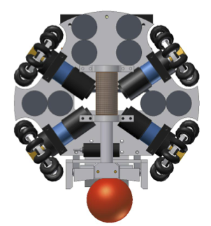
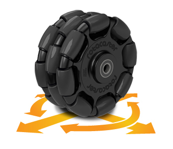
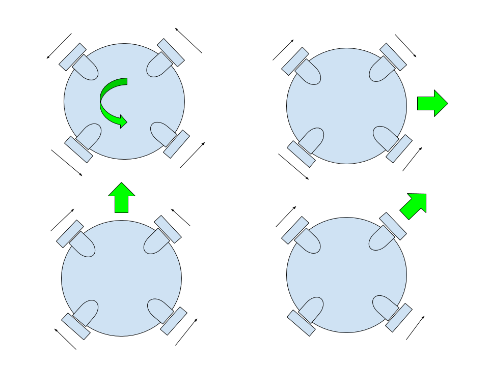
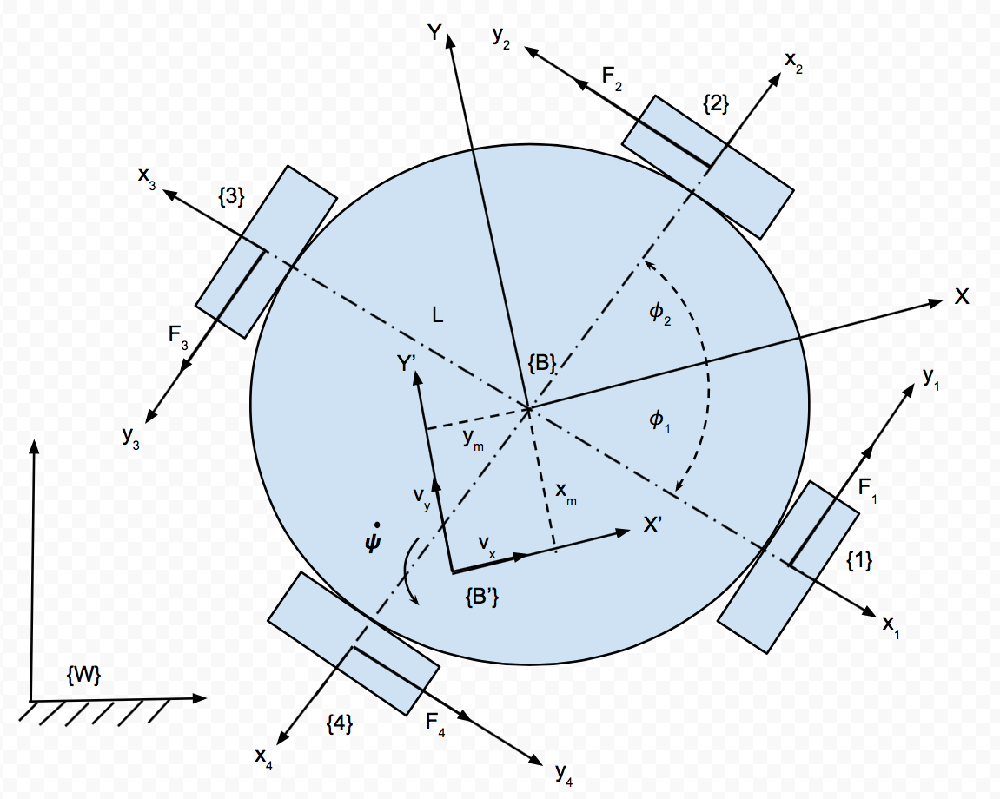
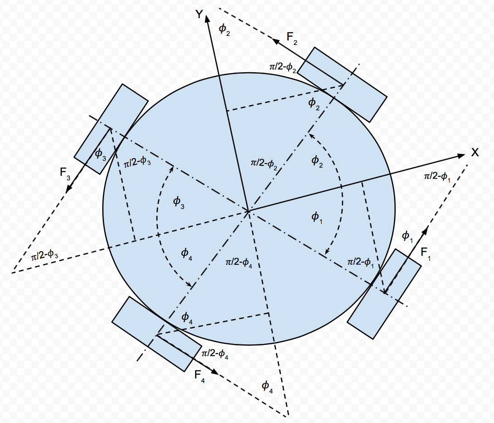
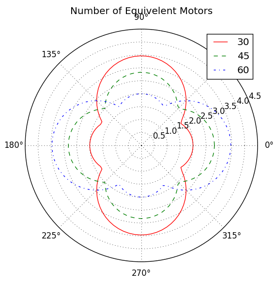

Holonomic Robot Equations of Motion
2016-03-12
Robots come in a variety of types and configurations: wheeled, tracked, legs, flying, etc. Common wheeled robots typically have two wheels (directly driven) with a caster wheel to make the robot stable. There are some without the caster wheel and employ a control system to keep them upright (inverted pendulum problem) and resemble a Segway scooter. All of these two wheeled robot are non-holonomic systems.
Non-Holonomic System
A non-holonomic system in physics and mathematics is a system whose state depends on the path taken to achieve it. An automobile is an example of a non-holonomic vehicle. The vehicle has three degrees of freedom: its position in two axes, and its orientation relative to a fixed heading. Yet it has only two controllable degrees of freedom: acceleration/braking and the angle of the steering wheel with which to control its position and orientation.1
Due to these constraints, a holonomic robot which could travel in any direction and immediately change its position and orientation is much more desirable. There are a variety of different wheels which make this type of robot possible such as mecanum or omni wheels.23

Holonomic soccer robot using 4 omni directional wheels and a kicking motor used to hit the red ball into a goal.4Omni wheels operate like standard wheels in that the force is produced normal to the motor’s axis of rotation and as a result of friction. However, there are a series of smaller wheels which ring the main wheel and allow the wheel to slip in the direction of the motor rotational axis. Note that no force is produced parallel to the motor axis, just slippage.

Omni directional wheel allows movement in any direction.5Omni wheels allow you to decouple position and orientation. These are common in soccer robots.

Holonomic Dynamics

Coordinate system tied to the body of the robot with the origin located at the center of mass. Note that the x-axis points straight up and the y-axis points to the right. Also, the motor angle ϕ is defined as the angle measured from the y-axis. The forces (F) are the results of the motors spinning in the positive direction according to the right hand rule. Note also that no force is produced parallel to the motor’s axis of rotation.The dynamics for a holonomic robot with 4 omni directional wheels (can be derived using Euler-Largrange (ℒ) which defines a system’s kinectic (T) and potential (V) energies in relation to a set of generalized coordinates (q) and generalized forces (Q):
$$ \mathcal L = T - V \\ \frac{d}{dt} \left\{ \frac{\partial \mathcal{L} }{\partial \dot q} \right\} - \frac{\partial \mathcal{L} }{\partial q} = Q \\ T = \frac{1}{2} M v_w^2+ \frac{1}{2} J \dot \psi^2 + \frac{1}{2} J_w (\dot \theta_1^2 + \dot \theta_2^2 + \dot \theta_3^2 + \dot \theta_4^2) \\ V = 0 $$
However, the dynamics must be calculated from an inertial reference frame (W) and take into account the rotating body frame dynamics (B′). Now, assume the body frame is offset from the center of mass ( CM) by xm and ym which compose a vector rm. Thus the velocity of the robot in the rotating frame would be:
$$ v_w = v_{B'} + \dot \psi \times r_m \\ v_w = v_{B'} + \begin{bmatrix} 0 & 0 & \dot \psi \end{bmatrix}^T \times \begin{bmatrix} x_m & y_m & 0 \end{bmatrix}^T = \begin{bmatrix} \dot x & \dot y & 0 \end{bmatrix}^T + \begin{bmatrix} -y_m \dot \psi & x_m \dot \psi & 0 \end{bmatrix}^T \\ v_{B'} = \begin{bmatrix} \dot x & \dot y & 0 \end{bmatrix}^T $$
where vB′ is the speed of the body frame. Now substituting that into the above kinetic energy equation T, we get:
$$ T = \frac{1}{2}M( ( \dot x - \dot \psi y )^2 + (\dot y + \dot \psi x)^2)+ \dots \\ T = \frac{1}{2}M( \dot x^2 - 2 \dot \psi y_m \dot x +\dot \psi^2 y_m^2 + \dot y^2 + 2 \dot \psi x_m \dot y + \dot \psi^2 x_m^2)+ \frac{1}{2}J \dot \psi^2 + \frac{1}{2} J_w (\dot \theta_1^2 + \dot \theta_2^2 + \dot \theta_3^2 + \dot \theta_4^2) \\ \frac{d}{dt} \left\{ \frac{\partial \mathcal{L} }{\partial \dot x} \right\} = M ( \ddot x - \ddot \psi y - \dot \psi \dot y ) \hspace{1cm} \frac{\partial \mathcal{L} }{\partial x} = M(\dot \psi \dot y + \dot \psi^2 x) \\ \frac{d}{dt} \left\{ \frac{\partial \mathcal{L} }{\partial \dot y} \right\} = M (\ddot y + \ddot \psi x + \dot \psi \dot x) \hspace{1cm} \frac{\partial \mathcal{L} }{\partial y} = M( -\dot \psi \dot x + \dot \psi^2 y) \\ \frac{d}{dt} \left\{ \frac{\partial \mathcal{L} }{\partial \dot \psi} \right\} = J \ddot \psi \hspace{1cm} \frac{\partial \mathcal{L} }{\partial \phi} = 0 \\ \frac{d}{dt} \left\{ \frac{\partial \mathcal{L} }{\partial \dot \theta} \right\} = J_w \sum \limits_{i=1}^4 \ddot \theta_i \hspace{1cm} \frac{\partial \mathcal{L} }{\partial \theta} = 0 $$
Now we make the following assumptions: B′ is coincident with B, xm = 0, ym = 0, ẋ = vx, ẏ = vy
$$ F_x = M (\ddot x - 2 \dot \psi \dot y ) \\ F_y = M (\ddot y + 2 \dot \psi \dot x) \\ T = J \ddot \psi \\ \tau_w = J_w \ddot \theta_1 \hspace{1cm} \tau_w = J_w \ddot \theta_2 \hspace{1cm} \tau_w = J_w \ddot \theta_3 \hspace{1cm} \tau_w = J_w \ddot \theta_4 $$
$$ \begin{bmatrix} F_x \\ F_y \\ T \end{bmatrix} = \begin{bmatrix} M & 0 & 0 \\ 0 & M & 0 \\ 0 & 0 & J \end{bmatrix} \begin{bmatrix} \ddot x \\ \ddot y \\ \ddot \psi \end{bmatrix} + \begin{bmatrix} 0 & -2M \dot \psi & 0 \\ 2M \dot \psi & 0 & 0 \\ 0 & 0 & 0 \end{bmatrix} \begin{bmatrix} \dot x \\ \dot y \\ \dot \psi \end{bmatrix} = \mathcal{M} \ddot X + \mathcal{O} \dot X = Q $$
World Coordinates
Now the dynamics derived so far are all in the body frame and we could stop here and develop a controller which performs velocity control. However, position control is more useful and a transform needs to be performed to move the velocities and accelerations into the world frame.
$$ \dot X^W = R_B^W \dot X^B \\ R_B^W = \begin{bmatrix} \cos \psi & \sin \psi & 0 \\ -\sin \psi & \cos \psi & 0 \\ 0 & 0 & 1 \end{bmatrix} \\ \ddot X^W = \dot R_B^W \dot X^B + R_B^W \ddot X^B \\ \dot R_B^W = \begin{bmatrix} \sin \psi & -\cos \psi & 0 \\ \cos \psi & \sin \psi & 0 \\ 0 & 0 & 1 \end{bmatrix} $$
Now, substituting this into the dynamics, gives dynamics in the world coordinate system of:
$$ F = \mathcal{M} (\dot R \dot X + R \ddot X ) + \mathcal{O} R \dot X \\ F = \mathcal{M} R \ddot X + (\mathcal{M} \dot R + \mathcal{O} R) \dot X $$
External Forces and Torques
Now looking at the robot and summing the forces into their body referenced x and y directions and the torque about the z axis, gives us:
$$ \sum F_x=f_1 \sin(\phi) - f_2 \sin(\phi) - f_3 \sin(\phi) + f_4 \sin(\phi) \\ \sum F_y=f_1 \cos(\phi) + f_2 \cos(\phi) - f_3 \cos(\phi) - f_4 \cos(\phi) \\ \sum T=L(f_1+f_2+f_3+f_4) $$
Additionally, we can simplify this by assuming all of the angles are the same (e.g., ϕ1 = ϕ2 = ϕ3 = ϕ4) and can now put this into a matrix form:
$$ \begin{bmatrix} F_x \\ F_y \\ T \end{bmatrix} = \begin{bmatrix} \sin(\phi) & 0 & 0 \\ 0 & \cos(\phi) & 0 \\ 0 & 0 & L \end{bmatrix} \begin{bmatrix} 1 & -1 & -1 & 1\\ 1 & 1 & -1 & -1\\ 1 & 1 & 1& 1 \end{bmatrix} \begin{bmatrix} f_1 \\ f_2 \\ f_3 \\ f_4 \end{bmatrix} $$
where ϕ is again the angle of the motors, fi is the magnitude of the force produced by the motors, and L is the radius of the robot.
where pinv()6 is defined as the pseudoinverse since A(ϕ) is not a square matrix. Finally, substituting these into the original equation, we can calculate the torques given the desired accelerations.
$$ \begin{bmatrix} \tau_1 \\ \tau_2 \\ \tau_3 \\ \tau_4 \end{bmatrix} = \frac {M r_w} {4} \begin{bmatrix} -1 & 1 & 1 \\ -1 & -1 & 1 \\ 1 & -1 & 1 \\ 1 & 1 & 1 \end{bmatrix} \begin{bmatrix} \frac{1}{\sin(\phi)} & 0 & 0 \\ 0 & \frac{1}{\cos(\phi)} & 0 \\ 0 & 0 & \frac{1}{2} \end{bmatrix} \begin{bmatrix} a_x \\ a_y \\ R \dot \omega \end{bmatrix} $$
Now looking at this equation, we notice that ϕ can not be equal to 0, 90, 180, 270, or 360 otherwise we get a singularity in the A(ϕ) matrix. This however is not an issue in the real world, since the motors would occupy the same physical space and the robot would essentially only have 2 and not 4 motors.
Holonomic Robot Kinematics

Configuration of three groups of motors where ϕ is 30, 45, and 60 degrees.
Number of equivalent motors for any direction under linear movement only, no rotational movement allowed.Now performing a similar exercise for what was done with the dynamics, looking at coordinate, the velocity of motor 1is given by v1 = − sin (ϕ)vx + cos (ϕ)vy + Rω. Performing this for each wheel gives:
$$ \begin{bmatrix} v_1 \\ v_2 \\ v_3 \\ v_4 \end{bmatrix} = \begin{bmatrix} -\sin(\phi) & \cos(\phi) & L \\ -\sin(\phi) & -\cos(\phi) & L \\ \sin(\phi) & -\cos(\phi) & L \\ \sin(\phi) & \cos(\phi) & L \end{bmatrix} \begin{bmatrix} v_x \\ v_y \\ \omega \end{bmatrix} = \begin{bmatrix} -1 & 1 & 1 \\ -1 & -1 & 1 \\ 1 & -1 & 1 \\ 1 & 1 & 1 \end{bmatrix} \begin{bmatrix} \sin(\phi) & 0 & 0 \\ 0 & \cos(\phi) & 0 \\ 0 & 0 & L \end{bmatrix} \begin{bmatrix} v_x \\ v_y \\ \omega \end{bmatrix} $$
Now setting ω to zero and calculating only linear movement, we can determine the number of equivalent motors. For example, setting ϕ to 30 ∘ and traveling in the x direction only ($\begin{bmatrix} v_x & v_y & \omega \end{bmatrix}^T = \begin{bmatrix}1& 0 & 0 \end{bmatrix}^T$), the above equation simplifies to 4sin (30) or 2 equivalent motors. Repeating for the y direction results in 4cos (30) or 3.46 equivalent motors.
Now it is interesting to note that when ϕ is set to 30 ∘, the robot has more equivalent motors when going forward or backwards, while a ϕ of 60 ∘ provides more equivalent motors moving left or right. When the motors are are angled at 45 ∘, movement is clearly equally optimized for both forward/backwards and left/right ( 2sin (45) is 2.83 motors) movement.
This tells us that no mater how the 4 motors are oriented in a realistic configuration, the robot will never have the equivalent use of all 4 motors. Movement in one direction or another can be optimized, but then a sacrifice is made in another direction. This fact is intuitively obvious.
Another issue is these results are also ideal. This logic assumes that the wheels will not slip and have good traction in any orientation. Unfortunately real world results do not mimic this situation and the robot’s performance will be reduced.
Additional Youtube References


References
- Balakrishna, Ashitava Ghosal, “Modeling of Slip for Wheeled Mobile Robots,”lEEE TRANSACTIONS ON ROBOTICS AND AUTOMATION, VOL. I I , NO. I , FEBRUARY 1995, pp. 126-132
- Agullo, S. Cardona, and J. Vivancos, “Kinematics of vehicles with directional sliding wheels,” Mechanisms and Muchine Theory, vol. 22, no. 4, pp. 295-301, 1987.
Alexander Gloye, Raul Rojas, Holonomic Control of a Robot with an Omnidirectional Drive, accepted for publication by Knstliche Intelligenz, Springer-Verlag, 2006.↩︎
Pseudoinverse for m > n: Aleft − 1 = (ATA) − 1AT or m < n: Aright − 1 = AT(AAT) − 1 such that AA − 1 = I or A − 1A = I↩︎